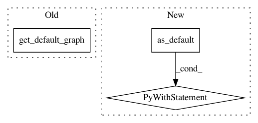

17eab763320e1cb310ffe0235e277ae63d1fbd97,keras/backend/tensorflow_backend.py,,clear_session,#,92
Before Change
shape=(),
name="keras_learning_phase")
_GRAPH_LEARNING_PHASES = {}
_GRAPH_LEARNING_PHASES[tf.get_default_graph()] = phase
manual_variable_initialization = tf_keras_backend.manual_variable_initialization
After Change
tf.reset_default_graph()
_SESSION = None
reset_uids()
with get_graph().as_default(), tf.name_scope(""):
phase = tf.placeholder_with_default(
False,
shape=(),
name="keras_learning_phase")
global _GRAPH_LEARNING_PHASES
_GRAPH_LEARNING_PHASES = {}
_GRAPH_LEARNING_PHASES[get_graph()] = phase
In pattern: SUPERPATTERN
Frequency: 3
Non-data size: 3
Instances
Project Name: keras-team/keras
Commit Name: 17eab763320e1cb310ffe0235e277ae63d1fbd97
Time: 2019-03-04
Author: francois.chollet@gmail.com
File Name: keras/backend/tensorflow_backend.py
Class Name:
Method Name: clear_session
Project Name: KhronosGroup/NNEF-Tools
Commit Name: 975ba2635d1185e68374e8f0bba6b468d5c90f1a
Time: 2021-03-31
Author: viktor.gyenes@aimotive.com
File Name: nnef_tools/io/tf/graphdef/reader.py
Class Name:
Method Name: _add_output_shapes
Project Name: emedvedev/attention-ocr
Commit Name: ab4fec6e3c437d33b59c46a92d5b4c282be1e4dd
Time: 2017-10-05
Author: edward.medvedev@gmail.com
File Name: aocr/util/export.py
Class Name: Exporter
Method Name: save